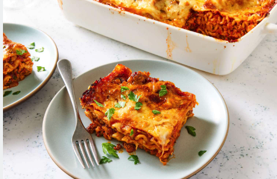

Home

Lasagne
Description
Ingredients
- 12 lasagne noodles
- 2 cups ricotta cheese
- 2 cups shredded mozzarella cheese
- 1/2 cup grated Parmesan cheese
- 2 cups marinara sauce
- 1 pound ground beef or Italian sausage
- 1 onion, chopped
- 2 cloves garlic, minced
- 1 teaspoon dried basil
- 1 teaspoon dried oregano
- Salt and pepper to taste
Steps
- Preheat the oven to 375°F (190°C).
- Cook the lasagne noodles according to package instructions. Drain and set aside.
- In a large skillet, cook the ground beef or sausage over medium heat until browned. Add the chopped onion and minced garlic, and cook until the onion is translucent.
- Add the marinara sauce, dried basil, dried oregano, salt, and pepper to the skillet. Simmer for 10 minutes.
- In a separate bowl, mix the ricotta cheese with a pinch of salt and pepper.
- In a 9x13 inch baking dish, spread a layer of the meat sauce on the bottom. Place a layer of lasagne noodles over the sauce, followed by a layer of the ricotta cheese mixture, and then a layer of shredded mozzarella cheese. Repeat the layers until all ingredients are used, finishing with a layer of meat sauce and a generous topping of shredded mozzarella and grated Parmesan cheese.
- Cover the baking dish with aluminum foil and bake in the preheated oven for 25 minutes. Remove the foil and bake for an additional 20 minutes, or until the cheese is bubbly and golden brown.
- Let the lasagne cool for 10 minutes before slicing and serving.